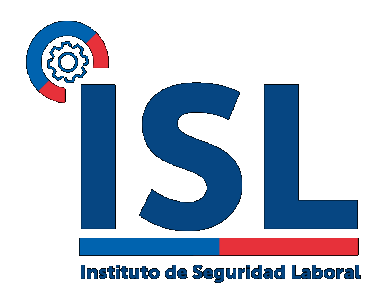

Página oficial Instituto de Seguridad Laboral (ISL)
El Instituto de Seguridad Laboral, es la entidad pública encargada de administrar el Seguro Social contra Riesgos de Accidentes del Trabajo y Enfermedades Profesionales. Es un servicio público que pertenece al Ministerio del Trabajo y Previsión Social, y a través de su actuar genera Valor Público otorgando Calidad de Vida a los y las trabajadores/as